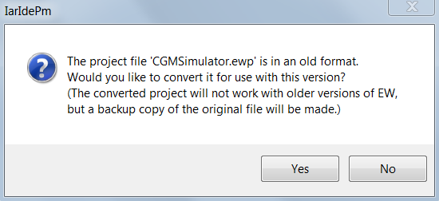
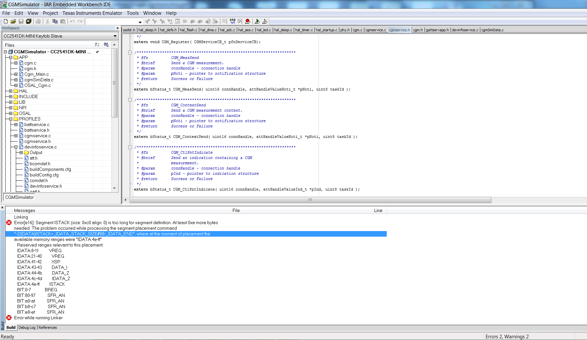
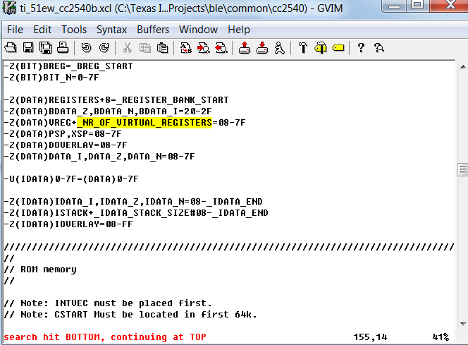

Working with IAR Workbench Newer than V8.20.2
"IDE pops up message requesting converting the project file into a newer format"

Pop-up Dialog to Confirm Format Conversion
Linker report memory mapping error.

Linker Error Encounter with Newer IAR IDE
Removing the highlighted portion of code solves the linker error in IAR Workbench v8.3 or above IDE.

Hight of the Removed Portion of the Linker Configure File
 1.8.6
1.8.6